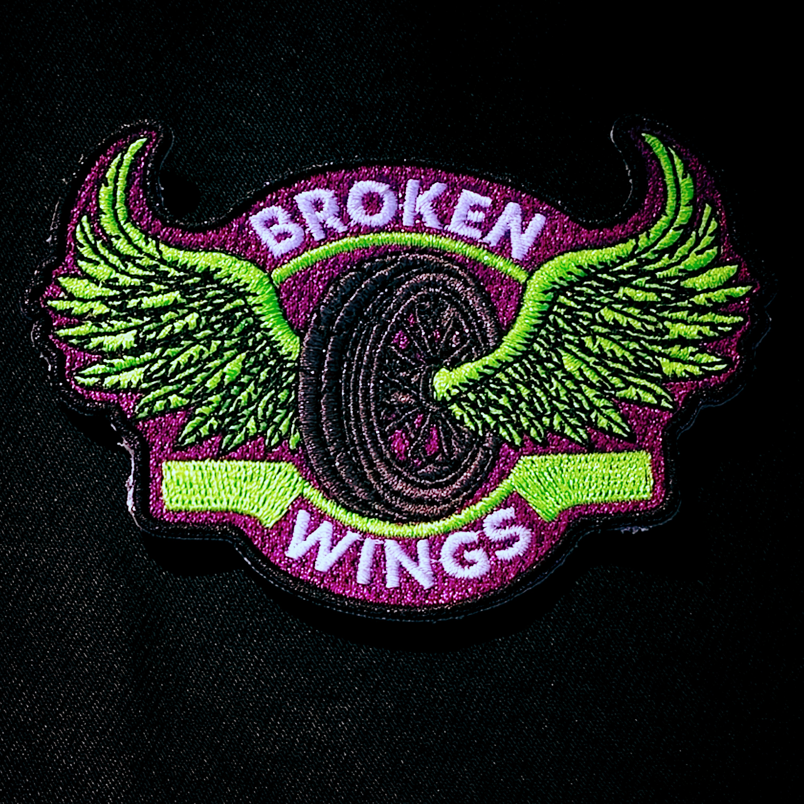
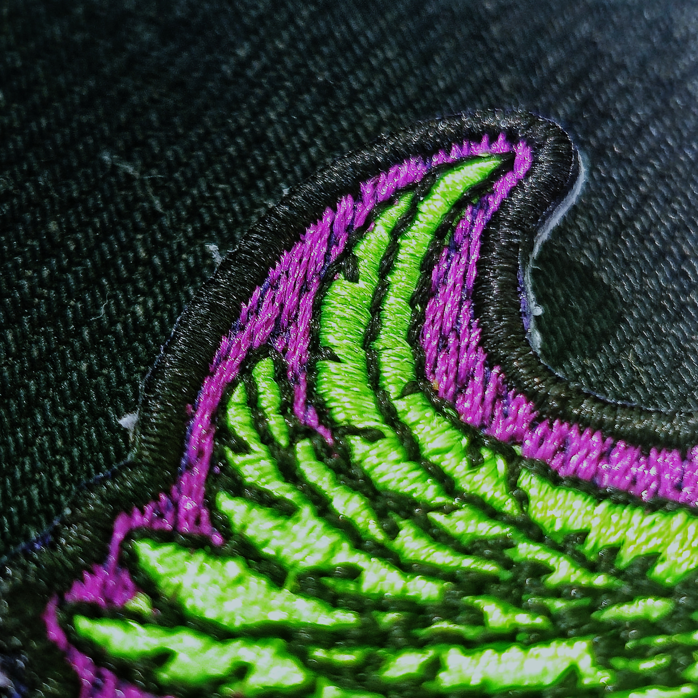
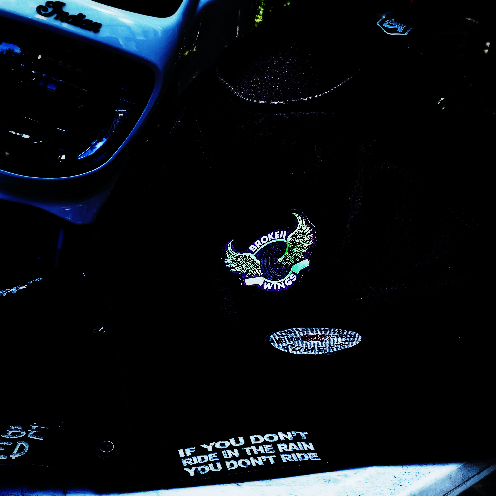

The Broken Wings Commemorative Patch
Posted on Tue 04 August 2026 in Blog

Every rider knows someone.
A friend who didn't come home. A fellow rider who went down and came back changed. Someone whose name gets said a little quieter now. The road takes people, and the motorcycle community carries that - quietly, personally, without a lot of ceremony.
The Broken Wings commemorative patch exists for that.

What It Is
The Broken Wings patch is a symbol for riders who've been through it - and for those we ride in memory of.
Wear it on your vest, your jacket, your bag. Every rider who sees it knows what it means. Every rider who wears one is carrying something real.
This isn't a brand statement. It's not a club patch. It's a personal one - for anyone who has gone down, anyone who rides in honor of someone who did, and anyone who understands that the road demands respect and doesn't always give it back.
Where It Comes From
On June 7, 2025, I went down.
My 2023 Indian Roadmaster - Gouyen - was totaled. I walked away. Not everyone does.
Coming back to riding on the other side of that experience changes how you think about things. About why you ride. About the people who loved this life as much as you do and aren't here to ride it anymore. The Broken Wings patch came from that - from needing something to carry the weight of it, and not finding anything that fit.
So I made it.


The Details
- High quality embroidered patch
- Designed to be worn - vest, jacket, bag, gear
- $14, shipped anywhere in the United States
One patch. One reminder that the road demands respect, and that the people who rode it matter.
Get Yours
👉 Order the Broken Wings patch - $14 shipped
If you ride, you already know someone this is for.
The Broken Wings Project is part of The Unbound Nomad. Questions? Reach out at unboundnomad.com.